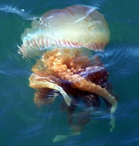

Picaduras y mordeduras
Que hacer en caso de picaduras de medusa o agua mala
Las medusas son criaturas marinas que tienen un cuerpo casi transparente con estructuras parecidas a dedos llamadas tentáculos. Las células urticantes que se encuentran dentro de los tentáculos pueden causar daño en caso de entrar en contacto con ellas. Algunas picaduras pueden ocasionar una lesión grave.
1 Lave con agua salada (el agua del océano está bien, pero asegúrese de no introducir arena en la herida). No limpies la zona de la picadura con agua dulce, No frotes la zona afectada con la toalla.
2 Empapa el área con una solución hecha de mitad agua y mitad vinagre durante unos 30 minutos, lo cual ayuda a remover los tentáculos. Enjuague el área y luego vuelva a empapar con más vinagre diluido al 50%. Luego aplica frío sobre la zona afectada durante 15 minutos usando una bolsa de plástico que contenga hielo. Nunca apliques hielo directamente.
Extrae cualquier resto de tentáculo que permanezca adherido a la piel, usando guantes.
3 Finalmente aplica una crema que contenga un analgésico, un antihistamínico o un corticosteroide.
No frotes la herida con orina ni bebidas alcohólicas. El cambio en el Ph puede activar más nematocistos y producir más dolor.
Si el estado de la víctima empeora progresivamente y se detectan complicaciones respiratorias, convulsiones o alteraciones cardíacas, ha de ser llevada inmediatamente al hospital para que le traten de estas afecciones.